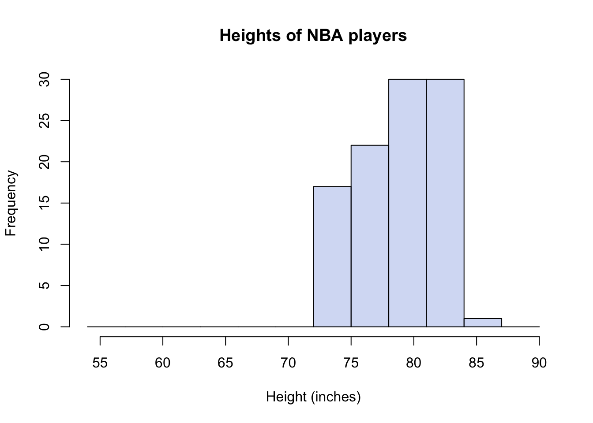

Chapter 14 Differences in athletics
Are professional basketball players taller?
Let’s start with an example to refresh your memory about sampling and differences. We’ll walk through this example very naively on purpose. Suppose we take 100 NBA basketball players as a sample (of all basketball players) and 100 NYU students as another sample (of NYU students), and now we look at the distribution of heights in each of our samples. We’ll consider male students, since the NBA players are also males. Actually, I don’t have any data on NYU student heights. So we’ll just consider all adult males. Conveniently, the openintro R package has a data set called male.heights and another data set called nba.heights. You can load them as follows
library(openintro)
data("male_heights")
data("nba_heights")And then you can inspect them. For example, one of the first things I will do with a data set is ask how big it is (how many rows and columns) and then look at the first few rows.
dim(male_heights)## [1] 100 1head(male_heights)## # A tibble: 6 x 1
## heights
## <int>
## 1 71
## 2 67
## 3 69
## 4 70
## 5 68
## 6 63The male_heights data table has 100 rows and a single column called “heights.” The nba.heights data set is a little different.
dim(nba_heights)## [1] 435 4head(nba_heights)## # A tibble: 6 x 4
## last_name first_name h_meters h_in
## <chr> <chr> <dbl> <int>
## 1 Acker Alex 1.96 77
## 2 Adams Hassan 1.93 76
## 3 Afflalo Arron 1.96 77
## 4 Ager Maurice 1.96 77
## 5 Ajinca Alexis 2.13 84
## 6 Aldridge LaMarcus 2.11 83Notice that there are 435 NBA players from the 2008-2009 season here. We have their first and last names as well as their heights in units of meters and also inches. I’d like to make a comparison between similarly sized samples. So I will just take a subsample of 100 NBA players. I can do this easily using the sample() function.
# sample 100 values at random from the nba heights in inches
nbaHeights <- sample(nba_heights$h_in, 100)
# rename the male height to match
maleHeights <- male_heights$heightsNote that because I did not use a set.seed in the code above, I have no idea which 100 NBA players I got. In fact, every time I (or you) run this, I (or you) will get a different sample! Finally, I would like to compare the distributions of heights for these two samples. For which our old friend the histogram is just what the doctor ordered.
# defining some colors and bin-breaks to standardize my plots
malescol <- rgb(0.8,0.2,0,0.2)
nbacol <- rgb(0,0.3,0.8,0.2)
mybreaks <- seq(54,90,3)
# plot a histogram showing both height distributions, separately
hist(maleHeights, col=malescol, breaks=mybreaks,
main="Heights of males", xlab="Height (inches)")
hist(nbaHeights, col=nbacol, breaks=mybreaks,
main="Heights of NBA players", xlab="Height (inches)")
# plot a histogram showing both height distributions, together (add=T)
hist(maleHeights, col=malescol, breaks=mybreaks,
main="", xlab="Height (inches)")
hist(nbaHeights, col=nbacol, breaks=mybreaks, add=T)
legend("topleft", c("non-NBA", "NBA"), fill = c(malescol, nbacol))
Figure 14.1: Histogram of NBA and non-NBA male heights on one plot using transparent colors
I have shown three histograms, one with only the males dataset, one with only the NBA data set, and one showing both groups at the same time. I’ve made the colors in R slightly transparent, so that both distributions are visible at the same time. But it is very important to recognize that in Figure 14.1, we are seeing an overlap region of two distributions, not three distributions shown with “stacked bars.” You sometimes see stacked barplots, where the height of the bar is the total count, and the colors represent contributions to the total from different groups. For example, units sold in the USA and units sold abroad = total units sold. Here, you don’t see the total. You would have to estimate it by mentally adding up the full heights of each bar. So, for example, the total number (out of 200) of males in the height range of 72-75 inches would be 14 from the males data set plus 17 from the NBA dataset.
I doubt any of you reading this are surprised to see that there is a big difference in these distributions; that NBA players are, on average, 9 or 10 inches taller than the (average) males. For the particular subsample I’ve drawn, the difference happens to be exactly 9.5 inches.
Now that you are somewhat conversant with sampling variation, you might wonder: what are the chances of a difference in sample heights like this occuring by chance? After all, if we had a large group of males to begin with, and we sampled from them two different times, we would not expect the averages of the two samples to be identical. We will probably get a taller sample and a shorter sample, right? But how much taller?
You can actually simulate and/or calculate an answer to these questions. Which of the following would you need to know in order to estimate the chances of a large difference in height occuring by chance?
- Group sample means (averages)
- Group sample variances (a measure of spread)
- Sample size of groups
- 1 & 2 only
- 2 & 3 only
- 1 & 3 only
- 1, 2, & 3
Answer.11
We can go to the National Center for Health Statistics website to retrieve a larger census of male heights. (You can find Body Measures in the National Health and Nutrition Examination Survey conducted every two years.) Conveniently (again) someone has even made an R package to save you the time (NHANES). The data set includes females as well as children, so I will filter those out. Here is a distribution of roughly 3600 males.
library(NHANES) #
library(dplyr)
lotsoheights <- NHANES %>% filter(Gender == "male" & Age > 18) %>%
select(Height) %>% unlist() %>% na.omit()
# convert cm to in
lotsoheights <- as.numeric(lotsoheights) / 2.54
# plot as before
hist(lotsoheights, col=malescol, breaks=mybreaks,
main="Heights of 3600 males", xlab="Height (inches)")
Now consider a process of sub-sampling from this larger sample repeatedly. That is, we take two samples of 100 and compare the difference in the sample averages. Let’s say we do it 1000 times. How often do we see differences as extreme as 9 inches? Mind you, we have no idea which of our two samples will turn out taller, so we’ll need to look for differences with magnitude (or absolute value) greater than 9. Because the difference could be 9.5 or -9.5 depending on the order of subtraction. Here goes:
numSamples <- 1000
sampleSize <- 100
differences_in_means <- c()
for (i in 1:numSamples) {
sample1 <- sample(lotsoheights, sampleSize)
sample2 <- sample(lotsoheights, sampleSize)
differences_in_means <- c(differences_in_means, mean(sample1) - mean(sample2))
}
hist(differences_in_means)
You’ll notice that in 1000 experiments, we never observed a difference in mean heights between our two samples of even 2 inches, let alone 9 inches. Here is how you would know for sure
# declare a threshold difference of interest
thresholdDiff <- 9
# compute percentage of events outside of this threshold
numExtreme <- length(which(abs(differences_in_means) > thresholdDiff))
percentExtreme <- numExtreme/numSamples * 100
paste0(percentExtreme,"%")## [1] "0%"In short, it seems highly implausible that this difference would occur by chance.
Exercise: modify the code to use samples of 10 instead of 100. Do you observe bigger differences? And if so, are they big enough to explain the NBA difference?
Exercise: Experiment with changing the threshold difference. Using the original sample size of 100, how often are differences greater than 1 inch? Where should the threshold be set so that a difference at least as large as this threshold is expected to occur roughly 25% of the time?
None of this is surprising
Okay, so suppose we accept that NBA players are systematically taller. Could it be that the NBA makes people taller? Perhaps there is special practice or vitamin supplement that NBA players use that causes them to grow 9-10 inches? Well, we could rule this out if, for example, we examined the heights of NBA players just BEFORE they became NBA players. If we did that, we would see that they were already tall.
Another possibility, then, is that NBA players are selected for being tall. The question we might now ask, though, is: is that fair? We’re saying that short people have a low likelihood of being hired as NBA players. (Note that we’re not suggesting that being tall is sufficient to become an NBA player, but it does seem to be necessary). What do you think?
Which of these statements do you most agree with?
- It is not fair; everyone should have an equal chance to play in the NBA
- It is not fair; shorter people, who are exceptionally talented in basketball, should have an equal chance to play in the NBA
- It is fair; tall players perform better because their height provides an advantage in the game of basketball
- It is fair; tall players look better on the court than short players, and the NBA has to sell tickets.
- It is neither fair nor unfair; it just is.
It may be possible to defend different answers to this particular question of fairness, but most of us can agree that professional sports are, by design, selective on performance. In a game like basketball, height provides an advantage which, along with athleticism (strength, speed, stamina, etc.), makes a player perform better.
In summary, we have observed a difference between groups. NBA players are taller than non-NBA players. This difference does not appear to be consistent with random chance. Indeed, we probably knew enough about basketball to explain the difference in terms of selection for competitive advantage. But, importantly, it is up to us to decide whether selecting players for competitive advantage—even if it means that we effectively discriminate against short athletes—is fair.
Surprising differences
So professional basketball players are more likely to be tall. What if I told you that professional hockey players are more likely to be….born in the first three months of the calendar year. What? Yes, you heard that right. See Figure 14.2 (Full paper: https://journals.plos.org/plosone/article?id=10.1371/journal.pone.0057753 ).

Figure 14.2: Percentage of NHL draftees born in the first or fourth quarter over time. Blue circles indicate first quarter; yellow triangles indicate fourth quarter. Source: Born at the Wrong Time: Selection Bias in the NHL Draft
Okay, let’s work through this idea similarly to the way we did when sampling from the NBA. That is, let us first consider the possibility that these differences are a result of sampling without systematic bias. As before, we need a baseline for comparison. For NBA heights, we needed to compare the distribution to non-NBA males. For hockey birth-months, we need a sense of birth-month distribution in the general population. I won’t bother distinguishing male and female births, because I don’t have any reason to believe that these occur differently month-by-month.
From this CDC source (https://www.cdc.gov/nchs/fastats/births.htm), I have produced a table of births by month in the United States from 2017.
| month | count |
|---|---|
| January | 313786 |
| February | 289054 |
| March | 319625 |
| April | 300116 |
| May | 322456 |
| June | 323920 |
| July | 334924 |
| August | 352151 |
| September | 337175 |
| October | 329869 |
| November | 316511 |
| December | 315913 |
Let’s concentrate on the number of births and, in particular, on the first four months of the year, January, Feb, March, and April.
What do you think is the most plausible explanation for the variation in the the number of births in each of these four months?
- There is chance variation is any random process, such as childbirth
- Odd numbered months are more likely to have higher birth numbers
- Births are likely to go up and down in month-long cycles
- The number of days in each of the first four months of 2017 (not a leap year) is 31, 28, 31, 30
Consider option (a). While the statement itself is true, the size of the variation between these months is much too large to be explained by chance alone. Sample size is key here!
If January and February were each equally likely, up to random chance, and we observed only 600 births in total instead of 600,000, then the chance of observing 313 or more births in one month or the other is actually about 27%. That is, there’s about a 13.5% chance of January having more than 313 births and a 13.5% chance of it having fewer than 287 births (the rest of the 600 going to February). However, even if we just up the sample to 6000, the chance of observing more than 3130 births in one month or the other goes down to about 0.05%, while for 600,000 births, the chances of a discrepancy this large is a number so small it has no meaningful interpretation. So, in short, chance alone can’t explain it.
No, you probably guessed that the length of each month explains most of this effect. But not ALL of it. If every day of the year were equally likely, we can estimate the number of expected births per day as 3855500/365 = 10563. How many births would we expect in a month that had 30 days? Well, for months with 31 days, we would expect 31*10563 = 327453 births (rounding), for months with 28 days, 295764. Notice that the difference is large. Notice also, though, that it is larger than the observed difference, and that observed monthly birth counts in January and February are both actually lower than expected. That must mean that some other months of the year get more births. And indeed this is true. Just look at July-October.
Having examined the data at the month level, we can also combine three months into quarters. Here is the quarterly count, as well as the proportion (each quarterly count divided by total).
| count | proportion | |
|---|---|---|
| Q1 | 922465 | 0.239 |
| Q2 | 946492 | 0.245 |
| Q3 | 1024250 | 0.266 |
| Q4 | 962293 | 0.250 |
Looking at this, we can see plainly that there are more births in the third quarter of the year (July-Sep) than in the first quarter (Jan-Mar). The proportions in Table 14.2 are what we would expect to see in any collection of people (e.g., professional hockey players) if they were not systematically selected for birth month.
Aside: Sampling with more than two groups
Previously in this course, for example with two-types-of-people questions and with beer taste-tests, we looked at how to simulate dichotomous outcomes. We used the sample() function in R repeatedly, or we took advantage of the binomial distribution. The function rbinom() can be used to simulate many beer taste-tests, for example, and the function dbinom() can be used to compute the proportion of certain outcomes. Suppose we wanted to simulate a draft of 100 hockey players, drawn from the population at random so that their birth-quarter should reflect the proportion of all births that occur in each quarter of the year. (This is necessary for the RShiny simulation this week.) This is very similar to our simulated “coin-flips” except that we have four possible outcomes. We want to roll a four-sided die, so to speak, but it is a loaded die. Not all outcomes are equally likely. This generalization of two to many is captured in the generalization of the binomial distribution to the multinomial distribution. The R function rmultinom() can be used like this
# suppose I have four possible outcomes with
# probabilities of 0.2, 0.3, 0.4, and 0.1, respectively
simulationResults <- rmultinom(10, 100, prob=c(0.2, 0.3, 0.4, 0.1))
simulationResults## [,1] [,2] [,3] [,4] [,5] [,6] [,7] [,8] [,9] [,10]
## [1,] 21 24 23 21 19 19 26 13 27 26
## [2,] 35 23 29 28 37 17 26 32 30 31
## [3,] 38 42 37 42 33 47 44 48 38 34
## [4,] 6 11 11 9 11 17 4 7 5 9The output might be a little confusing. What you are seeing is the result of 10 draw trials with a sample of 100. This is the 10 columns. For each trial, I will get a certain number of samples corresponding to outcome 1, outcome 2, outcome 3, and outcome 4. These are the four rows. As the outcomes were not equally likely, I do not expect 25% in each row. I expect (because of the probabilities I specified), 20%, 30%, 40%, and 10%. In fact, you can see that there is quite a bit of sampling variability. The average over our trial is extracted as follows:
## [1] 21.9 28.8 40.3 9.0Although not exactly our inputed proportions, the averages are pretty close. Which parameter do you think would make our mean value even closer if we increased it, the sample size or the number of simulations?
And now back to the issue of fairness
We could understand the NBA players were selected for height, because height offers a competitive advantage in basketball, other things being equal. Why would hockey players be selected for birth month? The answer lies in the structure of organized youth sports, where future athletes get their start. It is called the relative age effect (RAE).
In youth leagues, groups are cohorted by age, using January 1 (typically) as a cutoff date. Thus kids who are 9 years old as of January 1 would be assigned to a different group than kids who are 10 years old as of January 1. The idea makes sense, but it means that among 9-year-olds playing in the same team, those born early in the year are almost 10, while those born late in the year are almost a year younger. At this age, a difference of 9 months can mean a lot in terms of child development of strength and speed. The slightly older children may thus excel because of their relative age within their youth league. They are subsequently selected for increased attention from coaches, which further develops their ability. By the time they are fully grown, the effect of having been the bigger kid has compounded itself.
The relative age effect has been documented in many sports, not just hockey. Is it fair? Most people think it is not.
Whether you turn out tall or athletically gifted may indeed be luck. It may be genetically inherited, but from your point of view that is still luck. You didn’t earn your body. You didn’t choose what month to be born in either. But while height is an eventuality that we cannot control (nutrition aside), relative age differences are a fleeting effect (that is, they fade away over time) and are only introduced by artifical cutoffs. As a child, I was never going to grow up to be six-foot-nine. But I was surely going to grow up.
We need age cutoffs in youth sports; they serve a basic purpose. But we could avoid singling out the faster, stronger kids for attention by recognizing that they might be excelling in part because of their relative age. Put another way, we might want to single out kids who are born late in the year and, while not the best in the league, are still in the top performers among other kids born late in the year. That is, we would condition on their relative age. Doing so would be more fair and would be ultimately better for professional sports.
Fairness on trial: trans athletes
We started out this chapter with an example of height differences in the NBA. Although it represents systematic bias against short people, most people don’t have a problem with it. In contrast, the disparity of birth-months in professional sports seems to indicate an unfairness, a flaw in the process that can be fixed. It is not, perhaps, always so clear cut. In recent years, the issue of trans athletes in competitive sports has become quite controversial.
To understand the origins of this problem, we first need to understand why sports competitions are separated into sex categories in the first place. It may seem obvious. We have all probably noticed that biological differences between males and females can affect their athletic performance. However, looking at this problem through the lens of data helps to sharpen our focus. For example, I’m not a particularly good runner. If you picked a random person my age for me to race against, I wouldn’t personally feel like my odds were that much better against a female than a male. Why do I feel that way? And if I’m right, then why are there sex categories?
Consider the histogram of marathon run times shown in Figure 14.3. The plot uses transparent colors again to show two distributions, one for males and one for females.
Figure 14.3: 2017 Boston Marathon finishing times
A couple of things to notice. For one thing, there is a large overlap in the two distributions. This means that there are a lot of males and females who can be matched up with similar finishing times. This observation agrees with my intution that as a below-average runner, my competitive odds against males and females may not be so different. However, there is also clearly a shift in the means of the distributions. The males are finishing faster on average. In particular, at the left end of the distribution, we are looking at the elite marathoners. Let’s zoom in on that part of the distribution.

Figure 14.4: Fastest Runners in the 2017 Boston Marathon
Among the elite athletes who complete the maraton in under two hours and forty minutes, the males are clearly dominant. And the top 20 finishers are all male. In such a competition, it doesn’t look like a female runner will ever win.
We’ve created an interactive simulation for you to explore this idea further. In the simulation, you can vary the mean difference between two similar distributions and observe how often a random match-up between one member from each group (males/females) wins, and how often one of the slower group members places in the top 10.
As we can all imagine, dividing competitive running (and other sports) into separate events for males and females was designed to make the competition more interesting for the female athletes. There is still only so much room at the top. But under separate competition, the top few places for female athletes are accessible to female athletes.
Many societies now recognize that biology and gender do not align perfectly. A person whose sex at birth was male may at some point grow up to identify as a woman. This person may undergo sex reassignment or not. They may use hormone therapy. To add to the complexity, we now understand that there are sometimes differences in sex development. Trans and non-binary athletes may not fit the two-category mold that competitive sports organizations created. But there are non-cis-gendered women who want to be allowed to compete in the “women’s” category. Is it it fair to exclude trans women from doing so? Is it fair to them? Is it fair to their cis-gendered female competitors to include anyone who identifies as a woman? Data science cannot answer this question for us, but a cold look at the data can help us at least quantify the effects of these decisions.
The answer is D. Here’s why you need each quantity. Sample means. Clearly, if the sample means are very close, you are more likely to accept the possibility that the difference occurred by chance than if they are very different, so sample means are necessary. On the heels of that, the notion of “close” values of the means is itself dependent on the range of values we expect (i.e., on the variance or spread). Two buildings are close in height if one is 271 ft tall and another is 274 ft tall. But a difference of 3 feet among human beings is enormous. It’s enormous relative to the standard deviation, which for adult human beings is about 4 inches. The standard deviation for building heights is over 200 ft if we include skyscrapers. Finally, the sample size. The law of large numbers tells us that the sample mean gets closer to the population mean as the sample size increases. However, when the sample size is small, we will have more sampling variance. Intuitively, we can think about it this way: Let’s suppose the distributions are different but not so different that they don’t overlap. If we sample only two people from each population, we may get two tall people by chance from one (or short ones from the other) in such a way that the means are close by chance. But if we have small differences in means with large samples (say, 1000), then we believe that the means are, in fact, close or even equal.↩︎